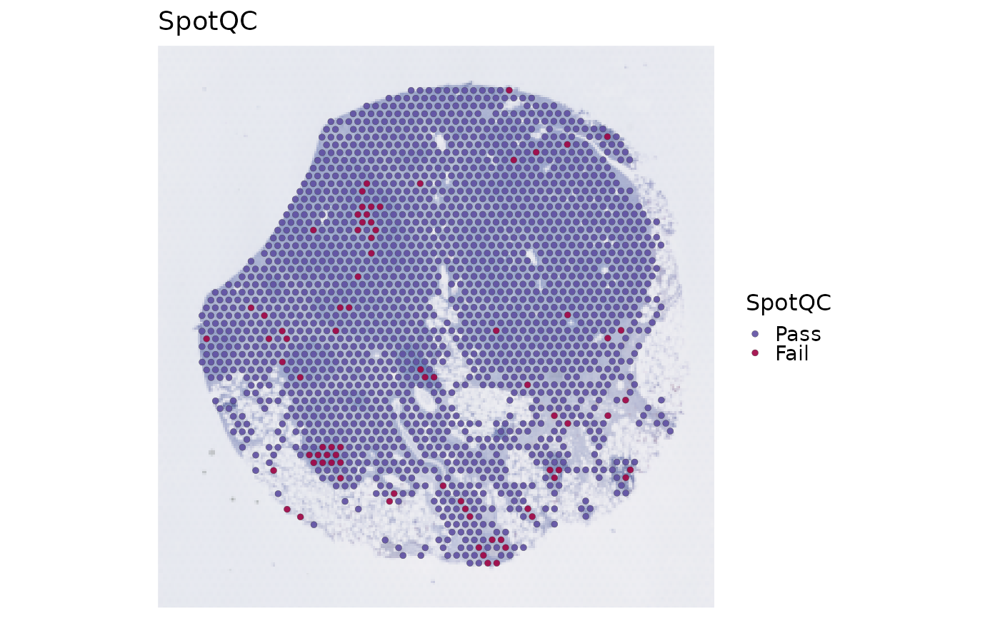

Calculate common spot-level QC metrics for spatial transcriptomics data and label failed spots without running single-cell-specific checks such as doublet calling or ambient RNA decontamination.
Usage
RunSpotQC(
object = NULL,
assay = NULL,
return_filtered = FALSE,
qc_metrics = c("outlier", "umi", "gene", "mito"),
outlier_threshold = c("log10_nCount:lower:3", "log10_nFeature:lower:3",
"spot_featurecount_dist:lower:3"),
outlier_n = 1,
UMI_threshold = 500,
gene_threshold = 200,
mito_threshold = 20,
mito_pattern = c("MT-", "Mt-", "mt-"),
mito_gene = NULL,
verbose = TRUE,
seed = 11,
srt = NULL
)Arguments
- object
A
Seuratobject.- assay
Assay to use.
NULLuses the default assay.- return_filtered
Whether to return a spot-filtered Seurat object.
- qc_metrics
QC metrics to apply. Available metrics are
"outlier","umi","gene", and"mito".- outlier_threshold
Character vector specifying outlier thresholds as
"metric:direction:nmads". Available default metrics are"log10_nCount","log10_nFeature", and"spot_featurecount_dist".- outlier_n
Positive integer giving the minimum number of outlier rules required to fail a spot. It cannot exceed the number of
outlier_thresholdrules.- UMI_threshold
Minimum UMI count required to pass
"umi"QC.- gene_threshold
Minimum detected gene count required to pass
"gene"QC.- mito_threshold
Maximum mitochondrial percentage allowed by
"mito"QC.- mito_pattern
Regex patterns used to identify mitochondrial genes.
- mito_gene
Optional explicit mitochondrial gene vector. When provided,
mito_patternis ignored.- verbose
Whether to print the message. Default is
TRUE.- seed
Random seed for reproducibility.
- srt
Deprecated alias for
object; supply exactly one of the two. It will be removed in scop 1.0.0.
Value
A Seurat object with spot QC metadata columns. Cells that are not
present in the selected assay receive NA QC labels. A selected-assay cell
also receives NA when at least one requested QC is unresolved and no
requested QC has a known failure. Only cells labelled Pass are retained when
return_filtered = TRUE.
Examples
Restored example output generated on 2026-10-13 from SCOP 53ed7e08f. These historical examples have not been revalidated against the current release. Current usage and arguments are documented above.
data(visium_human_pancreas_sub)
spatial <- RunSpotQC(
object = visium_human_pancreas_sub,
assay = "Spatial"
)
#> ◌ [2026-10-13 17:21:05] Running spot-level quality control
#> ✔ [2026-10-13 17:21:05] Spot QC completed: 1986 evaluated, 1907 Pass, 79 Fail
#> ℹ Scope assay "Spatial", layer "counts"
#> ℹ Saved metadata column `SpotQC`
#> ℹ Plot returned object `SpatialSpotPlot(<returned_object>, group.by = "SpotQC")`
SpatialSpotPlot(object = spatial, group.by = "SpotQC")
